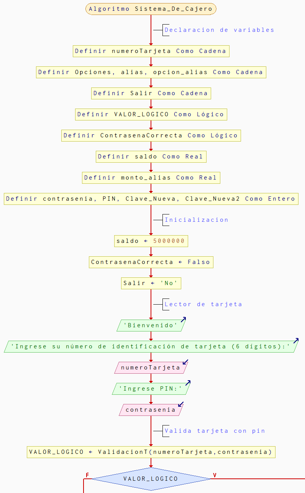
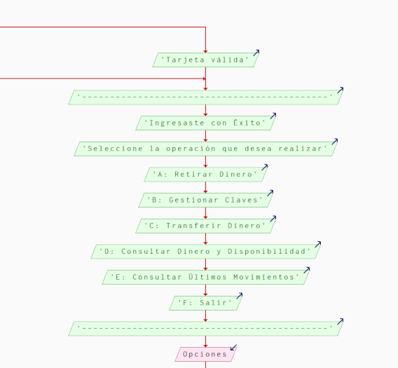
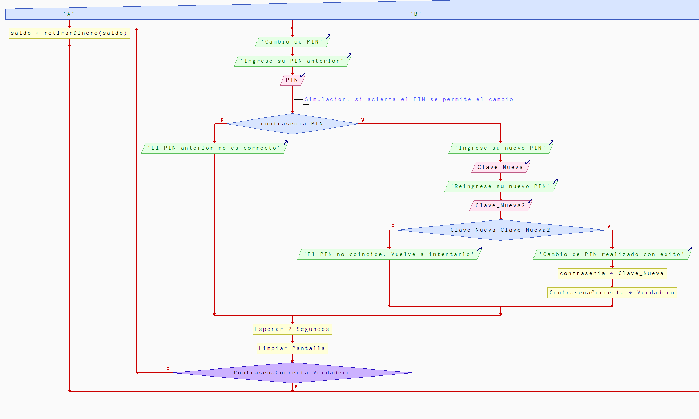
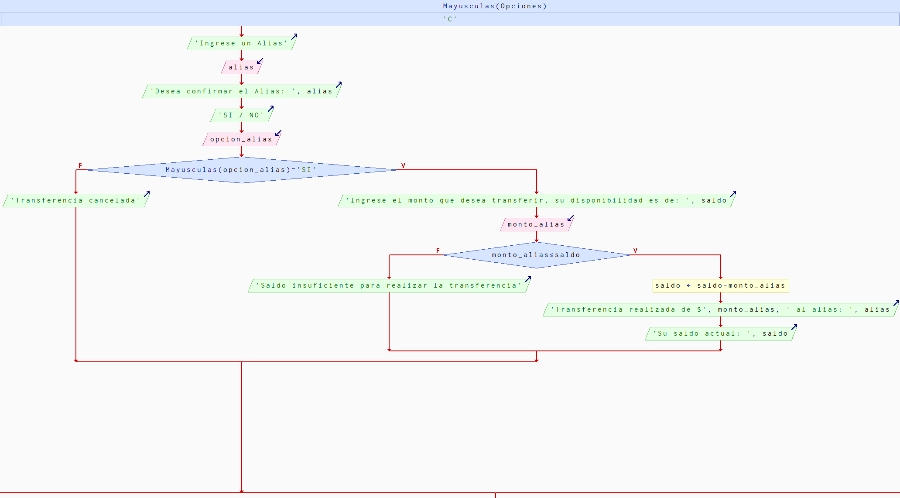
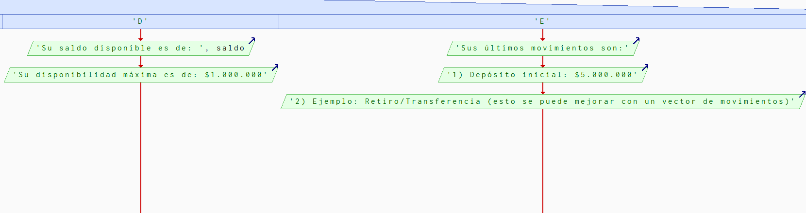
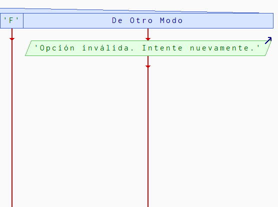
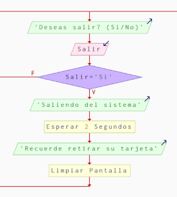

Inicio del sistema
Declaramos variables, las inicializamos, le pedimos la tarjeta y PIN al cliente, por ultimo la validamos.

Credenciales correctas
Si las credenciales son correctas le damos el menu de opciones al cliente.

Opciones A y B
Llamamos a la funcion para retirar saldo y realizamos el cambio de pin.

Opcion C
Realizamos la transferencia de dinero.

Opcion D y E
Devolvemos la información consultada.

Opcion F y Otro Modo
La opcion F nos permite salir del programa, y si ingresamos una opcion incorrecta nos pide volver a ingresarla.

Salir
Si ingresamos "Si", saldremos del sistema, de otro modo volveremos al inicio.
